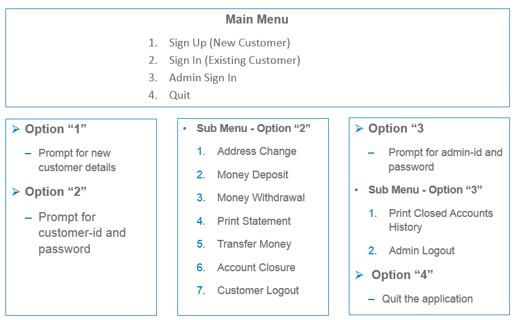

Select, Update, Delete,, Functions, Group By and Having
We are aware of banking services and would have done some transactions like deposit, withdrawal, transfer of funds and so on.
A bank typically has large number of customers and maintains the details of each customer i.e. what is the name of my customer, his address, account number, how much money is there in his account etc.
We also hear about multiple types of accounts like Saving account, Current account.
The project is to develop a banking application for a bank that has multiple customers spread across the country.
The Bank provides following services:
A customer can have either of the following type of accounts:
Savings Account – Generally used for temporary savings. Offers interest at the rate of 7.5% per annum on your savings. Maximum 10 withdrawals are allowed per month. No minimum balance is needed to open or maintain this account.
Current Account – Generally used by corporates and business men. No interest is offered on this account. No limit of on no. of withdrawals. A customer needs to have minimum 5K to open or maintain this account.
A customer can do following transactions:
Deposit and withdraw money in his account/s
Transfer money to other accounts
Print his account statement for given range of dates
Bank wants to maintain history of closed accounts i.e. which accounts have been closed on which dates. Bank admin can see this history.
Every customer has a customer-id and password to access his account.
When a new customer registers himself with the bank, a customer-id is auto generated by the bank and given to him.
Password needs to be set by the customer. It should be minimum 8 characters and can be any combination of numeric and alphabets.
Allow maximum 3 consecutive re-trials for unsuccessful login attempts.
Bank keeps following information of all customers to send regular updates
First and Last Name of customer
Address has following fields - Address Line 1, Line 2, City, State, Pincode. Pincode should be a 6 digit numeric and rest of the fields are strings.
Account no./s – Account no. is auto-generated by the bank on opening of a new account and is same as customer id.
Transactions (withdrawals & deposits) done by the customers on respective accounts
What needs to be done:
Develop OO model
Identify Classes, respective attributes and relationships among classes
Create Class diagram in UML
Write code for classes & methods, and given use cases
Develop DB model
Identify tables, respective fields and relationships among tables
Create tables
Execute given use cases
Application should show menu based choices as shown ahead for each of the given use cases.
After displaying result of a use case, appropriate menu should appear again and prompt for user’s choice.
Populate tables with sample data for testing
A customer can have only one account in a bank. (However, the next project i.e. Project V which will build incrementally on top of this project will allow customers to have multiple accounts in a bank.)
Interest on savings account is not getting applied.
Account once locked due to 3 successive erroneous password can not be unlocked.
Password is not encrypted.

Use Cases
Main Menu
Sign Up:
Prompt for new customer details (name, address etc.) and the type of account he wants to open. Add that customer based on necessary conditions (e.g. min balance). On successful creation of new customer, display auto-generated customer-id and account no. Prompt for a password and accept as per password rules. Display success or error messages as applicable.
Sign In:
Prompt for customer-id and password and validate. Allow maximum 3 consecutive re-trials for unsuccessful login attempts. Display error messages as applicable.
Admin Sign In:
Prompt for admin-id and password and validate. Allow 3 consecutive re-trials for successful login. Display success or error messages. Admin id and password are fixed and stored in database.
Quit:
Quit the application.
Sub Menu - Option “2”
Address Change:
Prompt logged-in customer for new address and update as per entered address. Display success or error messages.
Money Deposit:
Prompt logged-in customer for amount to be deposited and the account no. Validate (e.g. amount should not be negative, account no. should be valid) and update. Display the new balance.
Money Withdrawal:
Prompt logged-in customer for amount to be withdrawn and the account no. Validate (e.g. amount should be more than available balance, min balance condition should be maintained based on account type, account no. should be valid) and update. Display the new balance.
Write unit test cases as per Boundary conditions to test this use case.
Print Statement:
Prompt logged-in customer for account no., “Date From” and “Date To”. Validate the entered values (e.g. Dates are valid, “Date To” is greater than “Date From”, account no. should be valid), and display print statement with following values in a tabular format – Date, Transaction Type (Credit, Debit), Amount, Balance
Transfer Money:
Prompt logged-in customer for “Account To” and amount. Validate the entered values (e.g. “Account To” should be a valid account of any customer, minimum balance in “Account From” should be maintained). Update both accounts and display new balances. The transaction should be atomic i.e. if account balance is not updated properly in either “Account From” or “Account To”, entire transaction should be rolled back.
Account Closure:
Close the account so that no further operation like deposit, withdrawal is allowed on that account. Display the amount to be sent to customer’s address after his account closure, and give successful closure message.
Customer Logout:
Log out logged-in customer. Display successful logout message.
Sub Menu - Option “3”
Print Closed Accounts History
Display in a tabular format the list of closed account no.s with respective dates on which they were closed.
Admin Logout
Log out admin. Display successful logout message.
Development Approach
A group of 4 learners should develop the project in a collaborative manner on following lines:
All group members go through the specifications, understand, discuss and arrive at an class diagram and database design in following format. Discuss the same with faculty.
Incorporate the feedback from faculty on correctness of class diagram and database design to proceed with coding.
Divide the coding work among all the group members and ensure that each member writes and performs unit testing on his/her part of the code. Work can be divided either based on class or use-case.
Integrate the work and test the integrated application.
The project provides a practice on following concepts to learners: